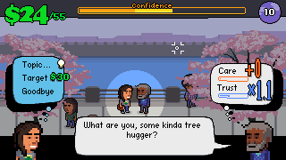
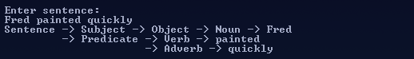

Jackson Lango
Programming / Art / Games / GitHub / Instagram
( This is a resume-styled writeup of my programming-related skills and projects. You can use the buttons below to highlight keywords on the page. )
Languages
Technologies
Projects
TOCS Archive
( April 2015 – Present ) SQL, Python, SSIS, TFS, Visual Studio, SSMS, Windows
In phase 1 I created an archive process for four large tables in a MSSQL Server database using SQL and SSIS. It's currently in production at ODOT. Now in phase 2 my team is creating the archive process for the rest of the tables.
TOCS Maintenance
( June 2014 – Present ) C#, .NET, JavaScript, SQL, TFS, Visual Studio, SSMS, Windows
Our team is maintaining a large .NET codebase with web, application, and database elements.
Game Development
Canvasser
Play Online ( 2012 – 2013 ) ActionScript
I designed and programmed this web-game about street fundraisers saving a forest from clearcutting loosely based on my own experiences.
Other Games And Prototypes
View More ( 2006 – Present ) ActionScript, Unity, C#, JavaScript, HTML5, C++, Git, Mercurial, Windows, Android
I have developed and published 11 flash games online since 2006. Recently I have created quite a few prototypes in the languages and frameworks listed above, but mostly with C# and Unity.
Concurrent SystemC
Source on Github ( September 2014 – May 2015 ) C++, Linux, Git
Our team of three added concurrency to SystemC as our Oregon State senior capstone project for Intel. SystemC is a C++ class library that can be used as a hardware description language.
Forth Language Translator
( January 2015 – March 2015 ) Python, Forth
This program translated from a simple, C-like, invented language into GNU’s Forth implementation, Gforth. The language included if-statements, loops and functions. The translator parses its input into a syntax tree and transforms it into the equivalent Gforth program.
Sentence Diagrammer
Source on Github ( 2015 ) Python, F#, Git
This is a work-in-progress, open-source sentence diagrammer that builds a parse tree out of English sentences. The initial implementation was in F# but I've since rewritten and expanded on it in Python.
Portfolio Website
Source on Github ( 2012 – Present ) JavaScript, HTML, CSS, Git
I have continually created and recreated a portfolio website that focuses on my coding projects, game development and artwork. You're looking at the current iteration right now, what do you think? ☺